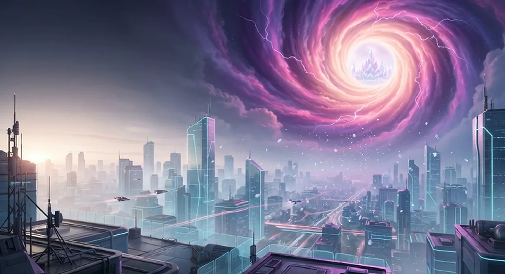
ORIGINAL GAME IP · LAUNCH SHOWCASE · 2026
AI로 만든 조각들을 하나의 세계로
게임 팬은 출시 전 세계관과 캐릭터에서 먼저 생긴다. 그래서 정보를 나열하는 홍보 페이지가 아니라, 스크롤하는 동안 그 세계 안에 들어가 있는 런칭 사이트를 목표로 했다.
가장 큰 과제는 AI였다. 이미지와 영상을 생성할 때마다 캐릭터의 얼굴, 색, 분위기가 조금씩 달라졌다. 이 조각들을 "같은 좌표, 다른 법칙"을 가진 하나의 세계로 보이게 만드는 것, 그리고 기획부터 배포까지 혼자 끝까지 연결하는 것이 이 프로젝트의 핵심이었다.
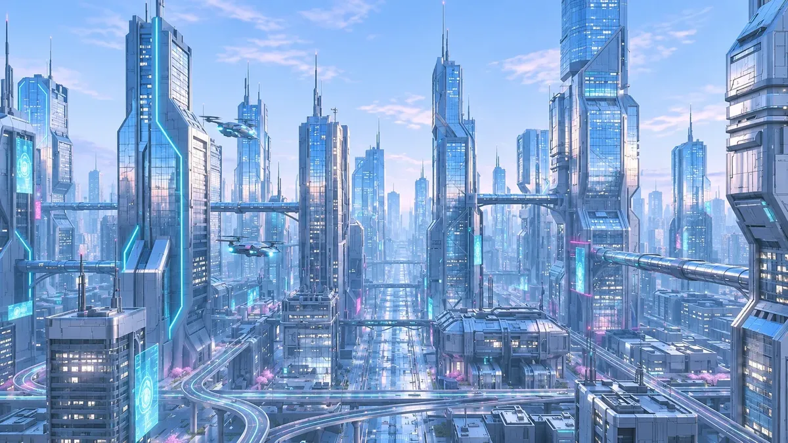

WHY THIS LAYOUT
원페이지 스크롤을 고른 이유는 런칭 사이트의 목적이 "세계관을 이해시키고 → 사전예약으로 이어지게" 하는 하나의 흐름이기 때문이다. 섹션 순서를 이 흐름에 맞춰 배치하고, 긴 페이지에서도 길을 잃지 않도록 탐색 장치를 더했다.
긴 페이지에서 현재 위치 알기
섹션이 9개인 원페이지라, 스크롤하다 보면 지금 어디쯤인지, 무엇이 남았는지 알기 어렵다.
상단 메뉴에 섹션 번호(01~06)를 붙이고, 오른쪽에 현재 섹션 표시 점을 고정했다. 배경 하늘의 시각(04:12 → 06:40)도 진행률 역할을 한다.
원하는 섹션으로 바로 이동할 수 있고, 남은 분량을 감각적으로 알 수 있다.
설명 대신 직접 조작
"같은 좌표, 다른 법칙"이라는 세계관은 글로 읽으면 추상적이다.
두 세계 비교는 드래그 슬라이더, 에너지 상태는 STABLE / UNSTABLE 토글, 스킬은 카드 선택으로 바꿨다.
읽지 않고 손으로 비교하며 이해한다. 세계관의 핵심 설정을 한 번의 동작으로 전달한다.
진입 장벽 줄이기
인트로 연출과 사운드는 몰입을 주지만, 다시 방문한 사람에게는 기다림과 소음이 된다.
인트로는 언제든 SKIP, 재방문 시 30일간 자동 생략. 사운드는 입장 후에만 재생하고 배경음악과 효과음을 따로 끌 수 있게 했다. 히어로에서는 H(HUD 숨김) · T(트레일러) · Enter(사전예약) 단축키를 지원한다.
처음 온 사람은 연출을 경험하고, 다시 온 사람은 바로 원하는 내용으로 간다.
목표 행동을 항상 가까이
쇼케이스의 최종 목표는 사전예약인데, 페이지 맨 끝에만 두면 도중에 이탈한다.
상단 고정 메뉴에 PRE-REGISTER 버튼을 항상 노출하고, 히어로에도 사전예약·트레일러 버튼을 바로 배치했다.
어느 위치에서든 한 번의 클릭으로 사전예약에 도달한다.
정보 위계 정리
게임 정보가 많아 섹션마다 텍스트 양이 쉽게 늘어난다.
섹션마다 [영문 라벨 → 큰 제목 → 한 줄 요약 → 상세 패널] 순서로 통일했다.
훑어보는 사람은 제목과 요약만, 관심 있는 사람은 패널까지 보는 2단계 탐색이 된다.
기기별 경험
PC용 HUD와 넓은 비교 화면을 모바일에 그대로 두면 화면이 복잡하고 조작이 어렵다.
모바일은 HUD 요소를 줄이고 세로 한 열로 재배치했다. 화면이 좁을 때 소용돌이·캐릭터가 잘리지 않게 구도를 따로 잡고, 앱 목업 페이지로 모바일 경험을 따로 보여준다.
작은 화면에서도 핵심 비주얼과 조작이 유지된다.
HOW IT EVOLVED
완성된 화면은 처음 모습과 많이 다르다. 이름, 첫 화면, 로고, 캐릭터 제작 방식이 어떻게 바뀌었는지 단계별로 정리했다.
P1첫 화면의 변화
처음에는 EVERGLOW라는 이름으로 코드로 그린 실루엣과 결정을 배치했다. 세계관이 "하늘에 열린 균열"로 정리되면서 이름을 VORTEXFALL로 바꾸고, 첫 화면도 세계관의 핵심 사건인 소용돌이를 보여주는 방향으로 다시 만들었다.
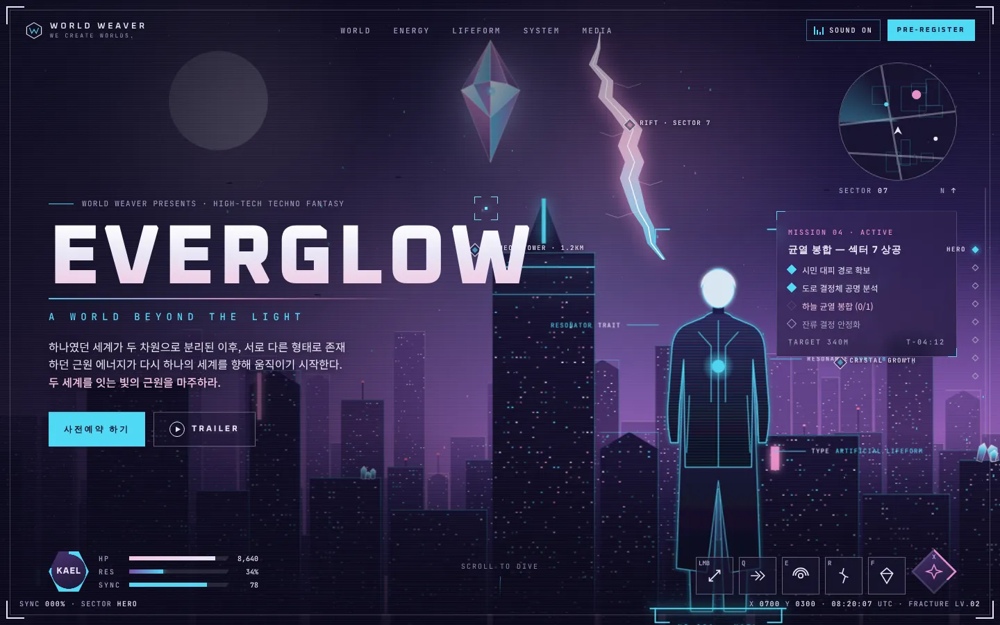
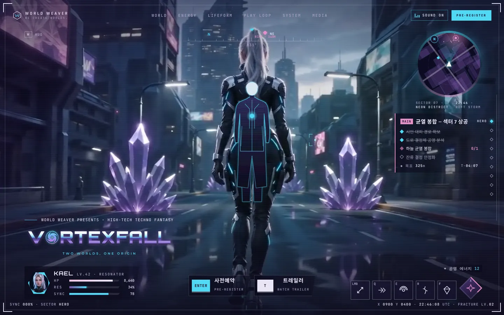
P2아이덴티티 결정
워드마크는 여러 버전을 같은 배경에 놓고 비교했고, 엠블럼은 소용돌이를 해석하는 방식(날개형·터빈·나선)을 나눠 후보를 만들었다. 작은 크기에서도 읽히는 4날개 소용돌이를 최종으로 골랐다.
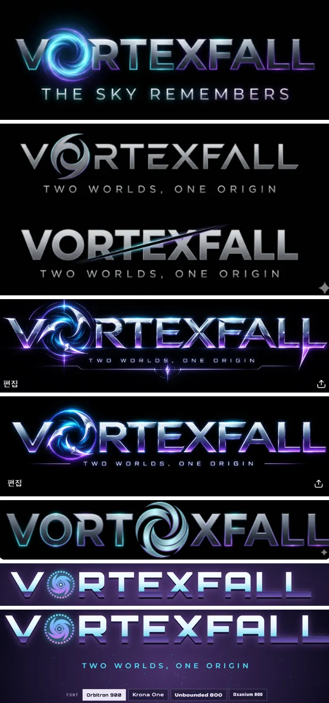
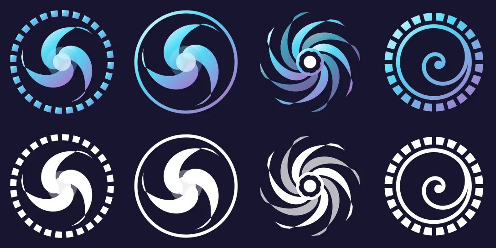
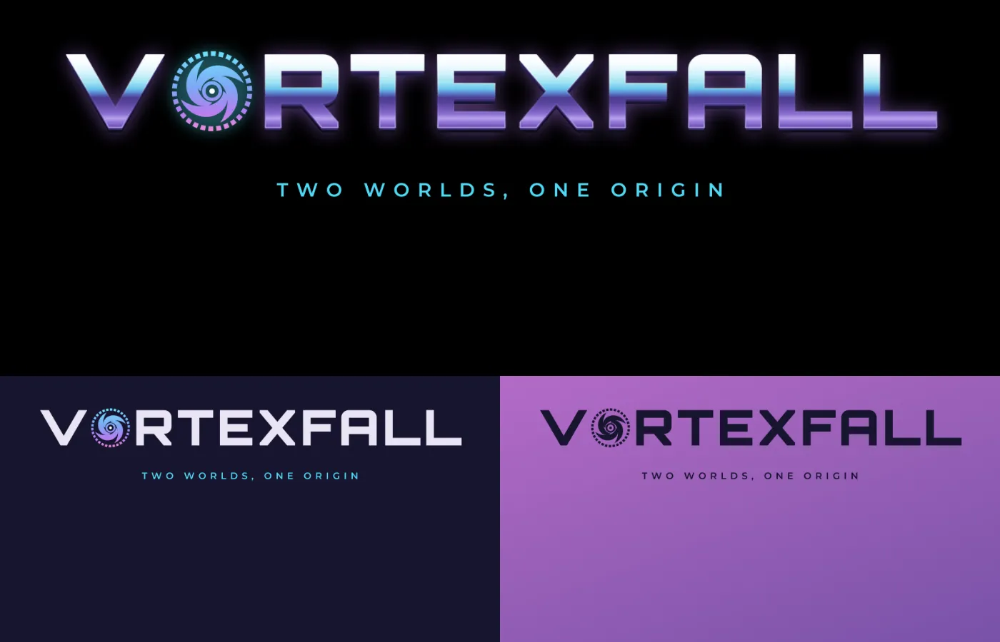
P3AI 캐릭터를 사이트에 올리는 과정
AI 영상은 배경까지 함께 생성되기 때문에 사이트 배경과 어울리지 않았다. 캐릭터를 초록 단색 배경으로 생성하고, 브라우저에서 WebGL로 실시간 배경을 제거해 사이트 위에 캐릭터만 띄웠다.
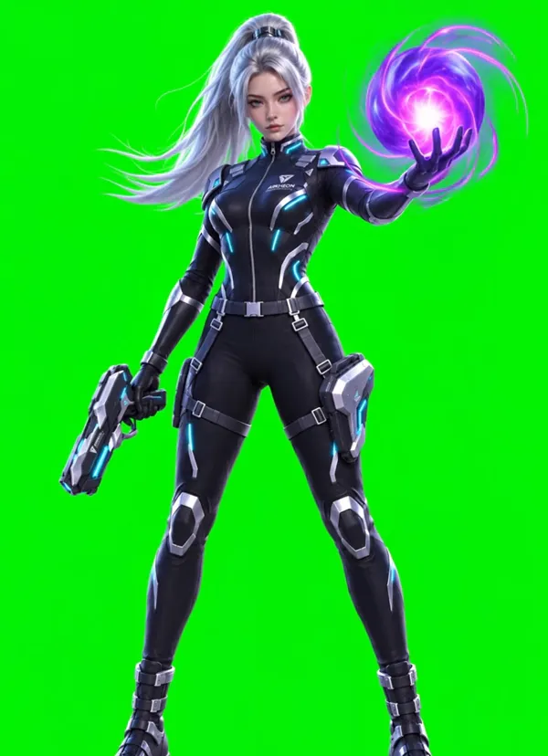
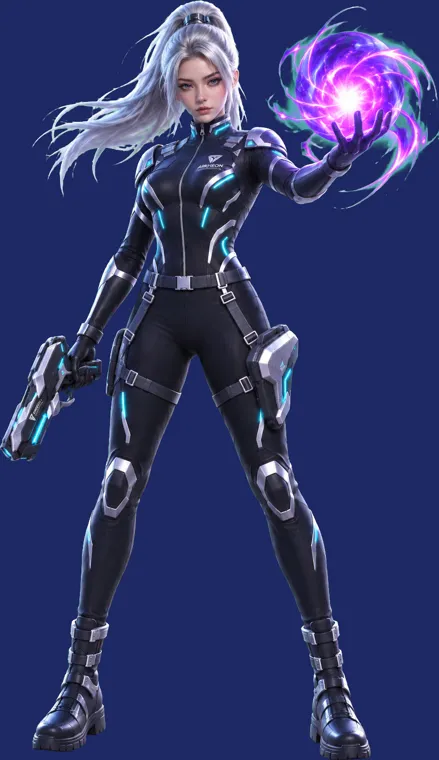
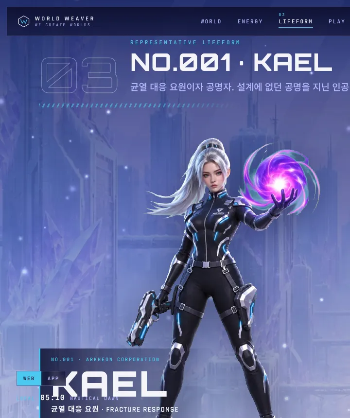
스킬 영상도 같은 방식으로 만들고, 아카이온 본부의 훈련실 배경을 직접 합성해 모든 스킬이 같은 공간에서 보이도록 기준을 정했다.
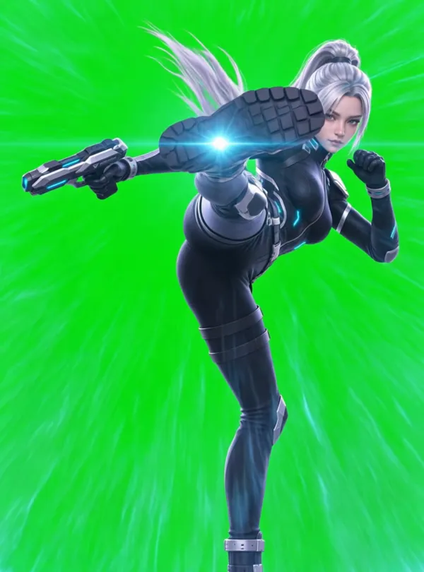
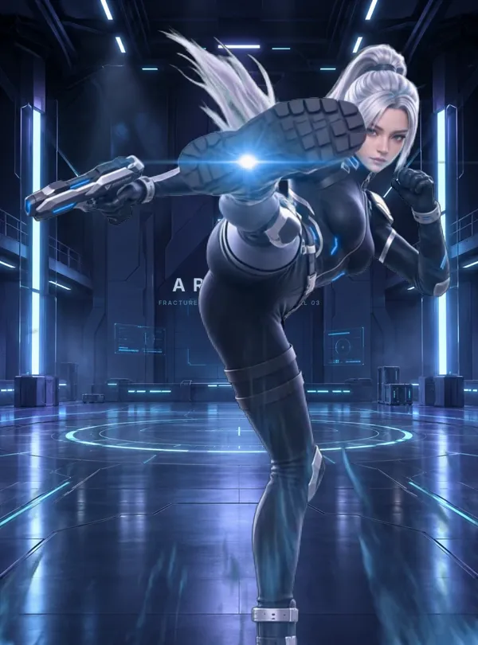
WHAT I CHOSE AND WHY
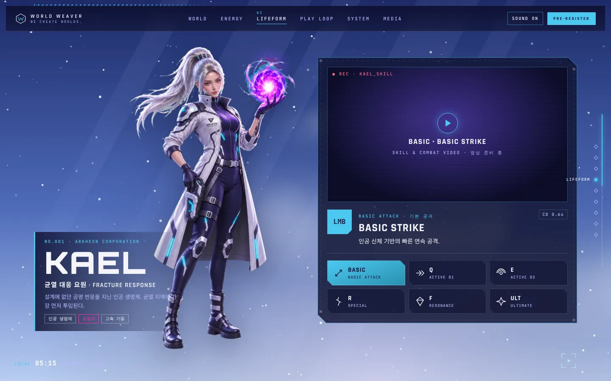
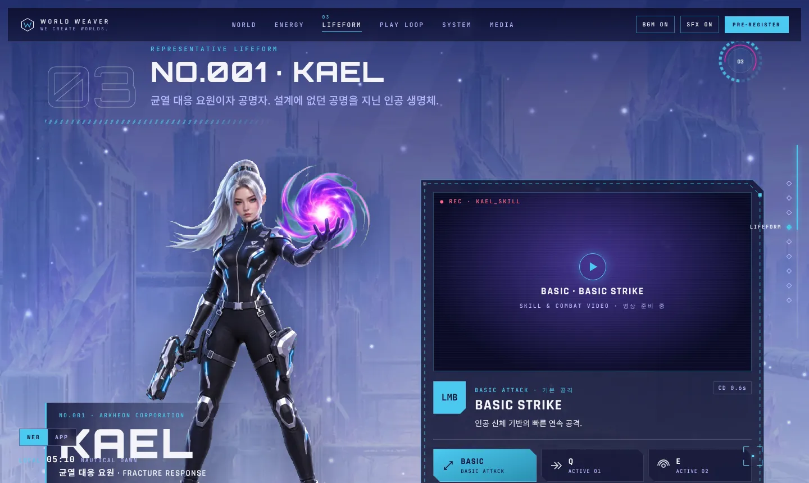
코트 vs 검정 전술 슈트
흰 코트 버전은 화사하지만, 사이트의 어두운 배경 위에서 캐릭터의 실루엣과 시안 라인이 묻혔다.
균열 대응 요원이라는 정체성과 "인공 신체 = 시안" 컬러 규칙이 가장 잘 드러나는 검정 전술 슈트로 확정. 코트는 다른 의상 후보로 보류.
일부만 공개 vs 전부 준비 중
스킬 6종 중 2종만 영상이 먼저 완성됐다.
일부만 연결하면 완성도가 들쭉날쭉해 보여, 6종이 같은 배경 기준으로 완성될 때까지 전부 "준비 중"으로 통일.
카드 + 영상 vs 설명형
04 섹션을 카드마다 짧은 인게임 영상을 넣는 형태로 시도했다.
카드 안에 영상만 들어가 밋밋해 보여 원래 설명형으로 복귀. 섹션 재구성은 다음 과제로 분리.
일체형 vs 반응형 + 앱 목업
PC 화면 안에 모바일 열을 띄우는 일체형 레이아웃도 만들어 봤다.
게임 쇼케이스는 PC 화면을 넓게 쓰는 게 강점이라 반응형을 유지하고, 모바일은 별도 앱 목업 페이지로 보여주기로 결정.
THE LAUNCH SITE
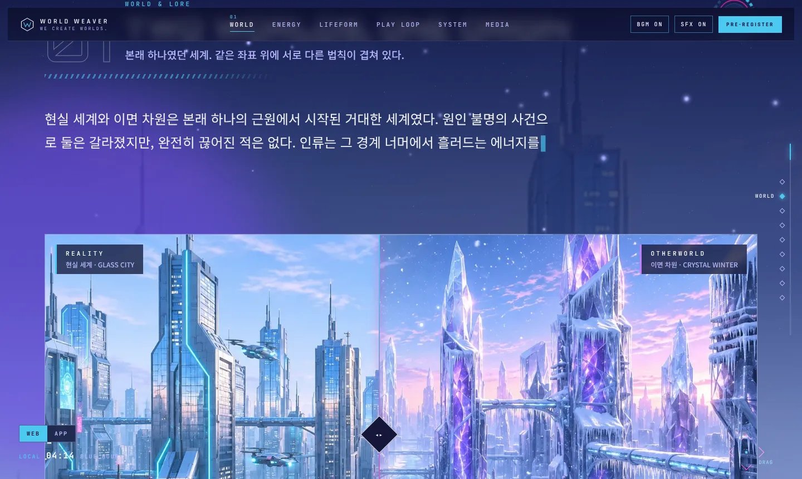

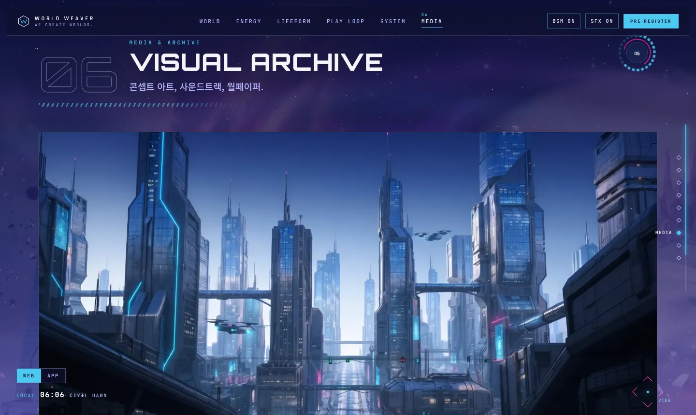
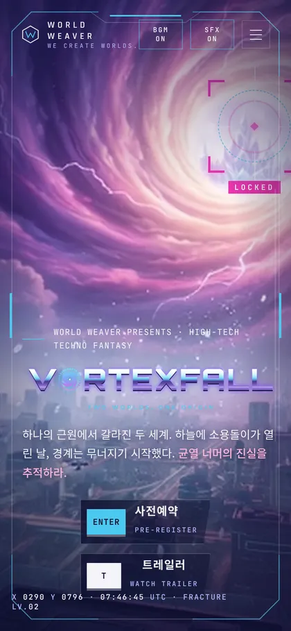

웹 · 모바일 반응형 · 앱 목업 페이지에서 WEB / APP 전환 · BGM과 효과음 개별 제어
HOW IT WAS BUILT
| STAGE | TOOL | 어떻게 썼나 |
|---|---|---|
| PLANNING | Claude | 세계관·캐릭터·스킬 설정 정리, 섹션 구성과 카피 작성 |
| IMAGE | Gemini | 도시·설원·소용돌이 같은 풍경과 키 비주얼 |
| IMAGE | ChatGPT | 결정체, 캐릭터 포즈, 영상용 시작 프레임 이미지 |
| VIDEO | Kling | KAEL 캐릭터 루프·스킬 영상 (얼굴 일관성이 필요한 장면) |
| VIDEO | Google Flow | 카메라 움직임과 군중이 있는 장면 |
| VIDEO | Dreamina | 불안정한 에너지 상태 영상 |
| EDIT | ffmpeg | 트리밍, 워터마크 처리, 루프 이음새 정리, 배경 합성 |
| SOUND | Python + Claude | 피아노·기타 음색 테마 BGM(48초 루프)과 효과음 세트 합성 |
| DEV | Claude Code | HTML·CSS·JS 구현, three.js·GSAP 모션, WebGL 크로마키 |
| DEPLOY | GitHub · Vercel | 버전 관리와 자동 배포 |
앞으로 확장할 것
- 스킬 영상 6종 완성 (훈련실 배경 기준)
- KAEL 포함 캐릭터 10인 상세 페이지
- 세계관·미디어 등 서브 페이지 구축
- 팀 구성 인게임 화면
- 트레일러 영상 마무리
- 테마곡 · 트레일러 OST · 사이트 BGM 정리
- 04 PLAY LOOP 섹션 재구성
- 03 캐릭터 섹션: 캐릭터·스킬 영상 비주얼 재배치와 리디자인